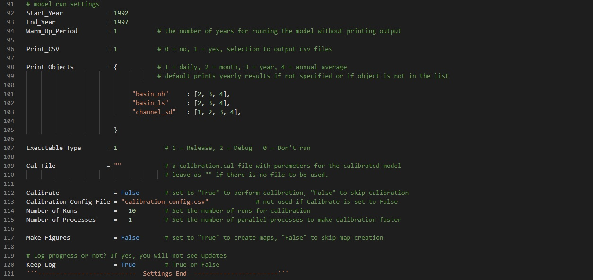
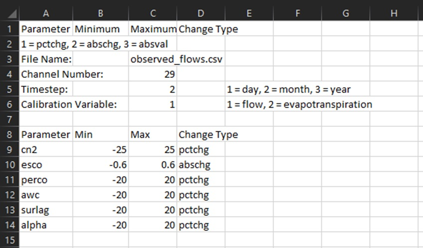

Model Run Options
For model run options, specify the duration of the run period in the
Start_Year and
End_Year variables. Set the model warm up period in the Warm_Up_Period
variable, as
shown in Figure 5. You can get results in Comma Separated Values (CSV) format by
setting the Print_CSV option to 1, else, set it to 0.

Figure 5: Model run and calibration settings section
You have the option to run the model after setup using the Release or
Debug
executables by setting Executable_Type to 1 or 2 respectively. Set it to 0 to
setup
the model without running it.
You can set the model to give results at specific timesteps using the
Print_Objects
variable. Set the name of the output variables you want to specify and the list of
the results timesteps needed as demonstrated in Figure 5. Include 1, 2, 3 and 4 to
print daily, monthly, yearly and annual average results respectively. The variables
available for selection are listed as follows:
basin_wb, basin_nb, basin_ls, basin_pw, basin_aqu, basin_res, basin_cha,
basin_sd_cha, basin_psc, region_wb, region_nb, region_ls, region_pw, region_aqu,
region_res, region_cha, region_sd_cha, region_psc, lsunit_wb, lsunit_nb, lsunit_ls,
lsunit_pw, hru_wb, hru_nb, hru_ls, hru_pw, hru-lte_wb, hru-lte_nb, hru-lte_ls,
hru-lte_pw, channel, channel_sd, aquifer, reservoir, recall, hyd, ru, pest.
For more
information on this variables, see the SWAT+ Input Output Documentation (Click
here
to view).
Calibration
If you want to apply parameters to the model after setup, specify the name of the
parameter file in the Cal_File variable; leave “” if you do not want to apply
parameters. Remember to have the parameter file in the calibration folder
under
data.
You can perform calibration on the model if you already know the outlet number that
will need to be calibrated. Information on the calibration such as observation file
name, parameter names and ranges are all set in a separate CSV file placed in the
calibration directory. The name of this configuration file should be placed
on the
Calibration_Config_File.

Figure 6: Example of Calibration_Config_File
Calibration_Config_File looks. It is important to know that the calibration is
solely done by trying out parameter sets generated by lating hypercube sampling and
chosing the parameter set that gives the highest Nash-Sutcliffe Efficiency Value.
The Number_of_Processes variables allows you to perform the calibration using
parallel processing which speeds up the calibration by trying multiple parameter
sets at a time.